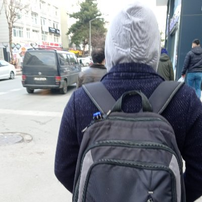

CTI / Pentester
Conscription : Deferred (2024)
Marital Status : Single
Turkey, Samsun
Skills
Unix/Linux
PowerShell
OSINT
Decryption
Programming Languages
Scripting Languages
Social Engineering
Competencies
* Teamwork
* Trustworthiness & Ethics
* Responsibility
* Results Orientation
* Commercial Awareness
* Problem Solving
* Decision Making
* Communication
* Organisational skills
Languages
Turkish
English
Ottoman Turkish
Russian
Arabic
My Hobbies
* Skating
* To swim
* Conducting subject-independent research
* Watching movies (I don't like TV series)
* Going out with my friends.
* Researching a new technology
* OSINT (Often)
* Playing FPS games / WarThunder
* To play chess
My primary focus is on emerging technology issues and Cyber Security concerns for organizations. (Like first 1 hour of log4j etc.)
I analyze systems and environments using behavioral analysis and other methodologies to detect unusual activity that may be a trace of malicious activity. (MITRE ATT&CK etc.)
I have experience using Security Monitoring Tools, SIEM and Analytics Tools to identify abnormal behavior and anomalies in data.
I am a skilled professional in Operating Systems and Network Protocols such as Windows and Linux/Unix and have a strong knowledge of different network protocols such as TCP/IP stack.
I have coding talent and I have Python etc. I am proficient in scripting languages. I also learned languages such as C/C++. I am a budding person at splitting logs, automating tasks and performing complex data analysis.
I have technical writing skills in preparing security reports and different technical documents, which are an important part of the Cyber Security and threat hunting process. I also read more than 5-6 articles a day.
I have the competencies to identify, monitor, evaluate and counter the threat posed by all source analysis, digital forensics and cyber actors.
Currently I focus on learning cloud technology and product development in SaSS structure.
I did an internship for 5 months as a cyber threat investigator at PRISMA CSI. In this process, I had productions such as software development, researching & reporting, training reports and writing articles.
-As an example, the article I wrote about internal and external cyber threats can be examined.
We organized Cyber Security trainings and studies.
When I joined the social student platform established during the pandemic process, we were a community of 500 people. With various activities and pieces of training; We have increased this number to 6000 people by including entertainment from time to time. I am happy to teach and have fun together during this process.
On my twitch channel, I aimed to teach how to look at the system with a hacker mindset and explain how technology works in the background without any expectations. By promoting this site, I alleviated the responsibility of being the only person in Turkey who regularly solves and publishes TryHackMe rooms. Now a certain group has completed their training through this site. I am happy to be a partner in their success.
Since I wanted to use the theater education I received in my childhood for a useful purpose, I played children's games for kindergarten students for a few months with my crew.
Associate in Science Degree - Internet and Network Technologies
-GPA : 3.70
Activities and societies: Cyber Security
I took the CS50x Computer Science training, which was localized in cooperation with Kodluyoruz.
I used it for full repetition within the scope of existing my training contents.
As a Cyber Security Expert in the Top 1%, I am working on an ongoing effort to solve current affairs labs.
In order to understand what my university cannot explain.
IT Support via Coursera